AI × Science 文献日报 2026/06/02
聚焦 AI × 物理 / 化学 / 材料交叉方向，自动过滤明显偏题的医学、教育与社会科学内容，并按主题重新排版，便于快速深读。
AI | 物理 | 化学 | 材料 | 交叉学科 | arXiv | 预印本追踪
原始候选 335 篇中，已剔除 0 篇明显偏离主线的内容，并从剩余 335 篇主线相关文献中精选 60 篇进入日报页，优先保留 AI × 物理 / 化学 / 材料交叉与关键计算方法工作。
核心关注（ML × ferro / 凝聚态）
8 篇今天的进展集中在把 ML 从“拟合性质”推进到“约束物理对象”：用可微 PME、笛卡尔张量消息传递、MACE/NEP 类机器学习势显式处理长程静电、偶极响应和 PES 光滑性，这直接关系到 BaTiO3、NbOI2 等极性/铁电体系的可靠动力学。非常规反铁磁筛选把零净磁化与自旋劈裂作为数据标签，可与 DFT+U、自旋群对称性分析结合，服务 CrI3、CrSBr 之外的非共线/补偿磁体发现。TiO2 极化子输运和钨中氢输运显示，MLMD 与深度学习加速 KMC 已能处理缺陷、载流子、扩散势垒这类凝聚态慢变量。FeTe0.55Se0.45 的 ML 谱反卷积说明机器学习开始介入 STM/STS 反问题，用于区分拓扑零模与普通能隙内态。
-
01非常规反铁磁体的数据驱动发现Data-Driven Discovery of Unconventional Antiferromagnets
📄 摘要：面向零净磁化但能带自旋劈裂的非常规反铁磁体，构建数据驱动筛选流程，替代逐例搜索，用于扩展自旋电子学候选材料库。
💡 亮点：用数据驱动流程系统筛选自旋劈裂反铁磁体。
📐 方法要点：以自旋劈裂、零净磁化为筛选标签构建反铁磁材料数据管线。
🔗 相关工作关联：呼应自旋群对称性、反铁磁自旋电子学、DFT+U 磁基态筛选。
💡 对你方向的启示：筛选磁性材料时应把能带自旋纹理纳入目标，而非只看总磁矩。
-
02用势能面平滑性指标指导机器学习势From Evaluation to Design: Using Potential Energy Surface Smoothness Metrics to Guide Machine Learning Interatomic Potential Architectures
📄 摘要：针对机器学习原子间势能量和力误差难以暴露的势能面不光滑问题，引入平滑性度量评价并反向指导架构选择，减少下游模拟异常。
💡 亮点：势能面平滑性成为机器学习势架构设计指标。
📐 方法要点：用 PES 光滑性指标诊断 ML 势，反向指导架构和训练选择。
🔗 相关工作关联：呼应 MACE、NEP、GAP、ACE、equivariant GNN 势能面稳定性评估。
💡 对你方向的启示：铁电畴壁和相变 MD 不能只报能量/力误差，还要检查曲率与连续性。
-
03深度学习加速钨中氢输运动力学蒙特卡洛Deep Learning-Accelerated Dynamic Kinetic Monte Carlo Simulation for Hydrogen Transport in Tungsten
📄 摘要：聚变堆钨壁氢饱和与再循环问题中，将深度学习嵌入动态动力学蒙特卡洛，加速氢在钨中的输运模拟，服务等离子体边界材料分析。
💡 亮点：深度学习加速钨壁氢再循环的动态蒙特卡洛模拟。
📐 方法要点：把深度学习代理嵌入动态 KMC，加速钨中氢扩散与俘获模拟。
🔗 相关工作关联：呼应缺陷扩散 KMC、等离子体壁材料、氢脆与多尺度输运建模。
💡 对你方向的启示：可将稀有事件势垒预测接入磁性/铁电缺陷迁移的长时标模拟。
-
04机器学习分子动力学研究 TiO₂ 极化子输运Polaron Transport in TiO₂ from Machine Learning Molecular Dynamics
📄 摘要：以 TiO₂ 过渡金属氧化物为对象，采用机器学习分子动力学研究过剩载流子极化子迁移，解析低迁移率和各向异性电荷输运的原子尺度机制。
💡 亮点：机器学习动力学解析 TiO₂ 极化子各向异性迁移。
📐 方法要点：用机器学习分子动力学追踪 TiO2 中极化子迁移与晶格耦合。
🔗 相关工作关联：呼应 DFT+U 极化子、过渡金属氧化物、小极化子跳跃输运。
💡 对你方向的启示：研究铁电氧化物载流子时需显式采样声子涨落和局域畸变。
-
05机器学习如何加速 CALPHAD 自由能建模How Can Machine Learning Accelerate CALPHAD Free Energy Modeling?
📄 摘要：针对 CALPHAD 受数据稀缺和以成分为主的函数形式限制，引入机器学习自由能表示，面向新化学空间提升热力学模型的预测能力。
💡 亮点：机器学习扩展 CALPHAD 对新化学体系的自由能预测。
📐 方法要点：以机器学习自由能函数扩展 CALPHAD 的成分—温度表示能力。
🔗 相关工作关联：呼应 CALPHAD、相图学习、热力学数据库外推和高熵合金建模。
💡 对你方向的启示：多组元铁电/磁性固溶体可用 ML 自由能减少经验函数偏置。
-
06结构无关材料性质预测的 BiL-AttNetBiL-AttNet: A deep learning architecture for structure-agnostic material property prediction
📄 摘要：Computational Materials Science 271 发表 BiL-AttNet，一种面向结构无关材料性质预测的深度学习架构；摘要未给出数据集、误差或对比结果。
💡 亮点：BiL-AttNet 瞄准无需显式结构的材料性质预测。
📐 方法要点：BiL-AttNet 面向无结构输入的材料性质深度预测。
🔗 相关工作关联：呼应 composition-only 模型、注意力网络、MatBench 式性质预测。
💡 对你方向的启示：缺晶体结构候选可先做成分快筛，但不宜替代对称性敏感模型。
-
07可微粒子网格 Ewald 学习长程静电Differentiable Particle-Mesh Ewald with Cartesian Tensor Message Passing for Learning Long-Range Electrostatics and Dipole Response
📄 摘要：将可微粒子网格 Ewald 与笛卡尔张量消息传递结合，使机器学习势学习长程静电和偶极响应，弥补局域架构对离子、极性和介电体系的不足。
💡 亮点：可微 Ewald 让机器学习势显式处理长程极化。
📐 方法要点：可微 PME 结合笛卡尔张量消息传递学习长程静电和偶极响应。
🔗 相关工作关联：呼应 equivariant GNN、MACE、极性 ML 势、介电响应与 Ewald 求和。
💡 对你方向的启示：BaTiO3、NbOI2 等极性材料建势应显式纳入长程库仑项。
-
08机器学习谱反卷积分辨 FeTe0.55Se0.45 中 Majorana 零模Deciphering Majorana Zero Modes in Topological Superconductor FeTe0.55Se0.45 with Machine-Learning-Assisted Spectral Deconvolution
📄 摘要：针对 FeTe0.55Se0.45 拓扑超导体中零偏压峰易被复杂能隙内态混淆的问题，构建机器学习辅助谱反卷积流程以区分 Majorana 零模信号。
💡 亮点：谱反卷积区分 FeTe0.55Se0.45 的零模与杂散态。
📐 方法要点：用 ML 辅助谱反卷积从 FeTe0.55Se0.45 STS 中分离零模信号。
🔗 相关工作关联：呼应 STM/STS 反问题、拓扑超导、Majorana 零模和谱线去卷积。
💡 对你方向的启示：凝聚态实验 ML 可从分类转向物理谱函数恢复与不确定性判别。
今日摘要
总览：今日条目明显集中在机器学习势能面与自旋拓扑材料两条主线：钨中氢输运用深度学习加速动态图动力学蒙特卡洛，锐钛矿/金红石二氧化钛极化子输运用机器学习分子动力学，氧化锆缺陷离子迁移则把玻恩有效电荷预测并入神经网络势。磁性与拓扑部分围绕交替磁体、反铁磁拓扑绝缘体和莫尔铁电展开，覆盖锰氟二、铁氟二、铁硒双层、铕锡二砷二、石墨烯-六方氮化硼、三方钨二硒双层以及铁碲硒中的马约拉纳零能模谱线分解。方法学上，可微颗粒网格埃瓦尔德、笛卡尔张量消息传递、斯莱特-科斯特约束图注意网络、通用神经网络势与主动学习卡尔法德，把长程静电、电子结构、晶体结构预测和自由能建模纳入端到端可训练框架。
热点：机器学习原子尺度模拟 → 从“拟合能量和力”转向“约束物理量和动力学事件”：势能面光滑度指标筛选势函数架构，可微颗粒网格埃瓦尔德学习长程静电和偶极响应，神经网络势结合玻恩有效电荷描述电场下缺陷氧化锆离子迁移，典型工作包括钨中氢输运、二氧化钛极化子输运、碳化硅多型熔化和通用神经网络势驱动的晶体结构预测。交替磁性与反铁磁输运 → 从材料发现扩展到可观测谱学和输运指纹：非共线/补偿磁序导致动量依赖自旋劈裂、电子霍尔黏滞、轨道与自旋霍尔量子化、磁振子偶极劈裂，典型体系包括锰氟二、铁氟二、铈镍砷氧、三角晶格交替磁体和堆垛调控铁硒双层。二维堆垛、莫尔与滑移铁电 → 关注应变、畴动力学和多畴开关对电子态的重构：单取向石墨烯-六方氮化硼出现铁电回线，滑移扭转双层形成莫尔应变斯格明子，化学气相沉积三方钨二硒双层中无序动力学限制滑移铁电，相关工作还连接扭转二维磁体的九十度畴壁和铕锡二砷二的磁驱动电子态重构。
今日文献
60 篇 · 20 含图深析-
01
非常规反铁磁体的数据驱动发现📊 含图深析Data-Driven Discovery of Unconventional Antiferromagnets
💡 亮点：用数据驱动流程系统筛选自旋劈裂反铁磁体。
📖 展开分析 + 配图
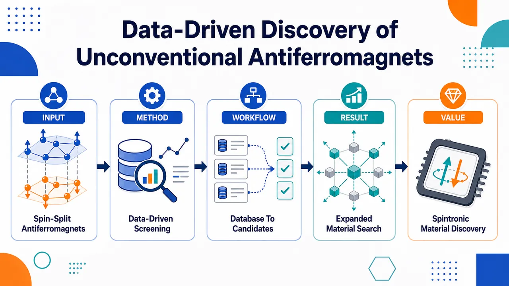
研究问题如何在大量材料中快速发现“零净磁化但电子能带发生自旋劈裂”的非常规反铁磁体，突破传统逐个材料分析导致的候选范围狭窄和发现效率低的问题。创新方法用数据驱动筛选框架取代逐例人工研究，把“零净磁矩、反铁磁有序、能带自旋劈裂”等特征转化为可搜索的材料判据，从数据库中批量识别潜在非常规反铁磁体候选。工作流程输入材料数据库与磁性/电子结构信息，先筛选零净磁化反铁磁材料，再检测能带中的自旋劈裂特征，随后生成候选材料清单，最终为后续第一性原理验证和自旋电子学性能评估提供目标。关键结果研究将非常规反铁磁体的寻找从小规模个案分析扩展为大范围材料搜索，显著扩大候选材料空间，并能够系统定位兼具零净磁化和自旋劈裂能带的材料。应用价值为低 stray field、高速、高密度自旋电子器件提供新型反铁磁材料来源，可推动无净磁矩但具自旋操控能力的下一代信息存储与逻辑器件设计。## 核心概览 该论文面向“零净磁化但能带存在自旋劈裂”的非常规反铁磁体，采用数据驱动方法进行材料筛选，属于计算材料发现/自旋电子学方向。 ## 方法要点 - 以非常规反铁磁体为目标体系，关注其“零净磁化”与“能带自旋劈裂”并存的特征。 - 使用数据驱动筛选策略，而非传统逐个材料个案研究。 - 目标是扩大候选材料搜索空间，用于发现潜在自旋电子学材料。 - 具体数据库来源、筛选规则、计算方法或机器学习模型等，摘要未详述。 ## 关键结果 - 论文提出或采用了一种数据驱动的筛选框架，用于寻找非常规反铁磁体。 - 该策略旨在突破逐例研究的局限，扩大候选材料的搜索范围。 - 研究面向自旋电子学应用场景，强调这类材料在材料发现中的潜在价值。 - 是否给出了具体候选材料名单、数量、能带计算结果或实验验证，摘要未详述。 ## 创新性判断 - 可能的新颖点在于：将非常规反铁磁体的发现从“个案式分析”推进到“数据驱动的大规模筛选”，有助于系统化寻找候选材料。 - 相比传统反铁磁材料研究，该工作聚焦“零净磁化但自旋劈裂”的特殊物性组合，具有面向自旋电子学的新材料发现意义。 - 由于摘要信息极少，其筛选标准、数据规模、算法创新和相对已有工作的具体优势仍无法确定。 -
02
三角交错磁体中的对称保护 Weyl 节线📊 含图深析Symmetry-Protected Weyl Nodal Loops in a Triangular Altermagnet
💡 亮点：Cr₇Se₈ 实现 Weyl 节线与交错磁性的共存。
📖 展开分析 + 配图
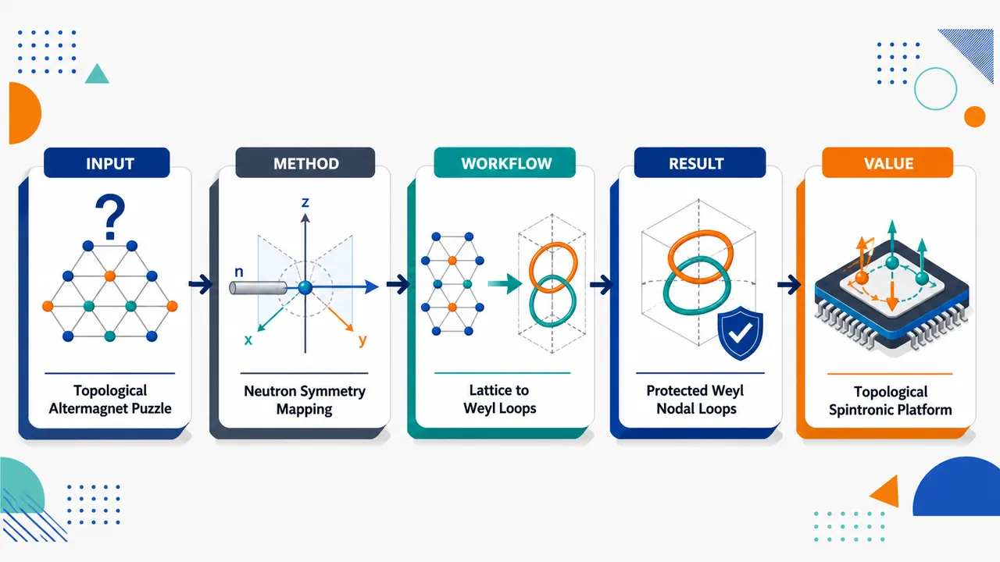
研究问题如何在真实三角晶格材料中同时实现交错磁有序与非平庸拓扑能带，并确认其是否能形成受晶体对称性保护的 Weyl 节线环。创新方法以 Cr₇Se₈ 为平台，利用中子衍射识别其交错磁结构，并将磁对称性与拓扑能带分析结合，揭示交错磁序可在同一三角晶格中保护 Weyl 节线环。工作流程选取三角晶格 Cr₇Se₈ → 通过中子衍射解析磁有序 → 确定交错磁体对称性 → 分析电子能带交叉 → 识别受对称性保护的 Weyl 节线环 → 建立磁性与拓扑耦合图像。关键结果在 Cr₇Se₈ 中实现并验证了 Weyl 节线交错磁体：非平庸拓扑能带与交错磁有序共存，Weyl 节线环由材料的磁晶体对称性保护。应用价值为拓扑磁性材料设计提供新范式，可推动自旋电子学、拓扑输运和低耗散量子器件中对交错磁体与 Weyl 拓扑态的协同利用。## 核心概览 论文报道在三角晶格材料 Cr₇Se₈ 中实现/确认对称性保护的 Weyl 节线交错磁体，属于拓扑磁性材料与交错磁性研究方向。 ## 方法要点 - 使用中子衍射等实验手段研究 Cr₇Se₈ 的磁有序；其他手段摘要未详述。 - 将 Weyl 节线拓扑能带与交错磁有序联系到同一材料体系中进行分析。 - 研究对象是具有三角晶格特征的 Cr₇Se₈。 - 标题表明关注“对称性保护”的 Weyl 节线，但具体对称性类型与证明方式摘要未详述。 ## 关键结果 - 在 Cr₇Se₈ 中实现或识别了 Weyl 节线交错磁体。 - 该体系将非平庸拓扑能带与交错磁有序耦合在同一三角晶格材料中。 - 标题指出其 Weyl 节线受到对称性保护，但保护机制摘要未详述。 ## 创新性判断 - 可能的新颖点在于把“Weyl 节线拓扑态”和“交错磁性”统一到 Cr₇Se₈ 这一三角晶格材料中，提供了拓扑能带与交错磁有序耦合的材料实例。 - 相比一般拓扑磁体或一般交错磁体，该工作可能强调“对称性保护 Weyl 节线”与“三角交错磁体”的结合；但是否为首次发现、具体领先性和与已有材料的差异，摘要未详述，无法确定。 -
03
感知量子隧穿的机器学习稳健部署📊 含图深析Quantum Tunneling-Aware Machine Learning: Physics-Derived Noise Models for Robust Deployment
💡 亮点：用隧穿物理噪声模型校准 AI 推理容错。
📖 展开分析 + 配图
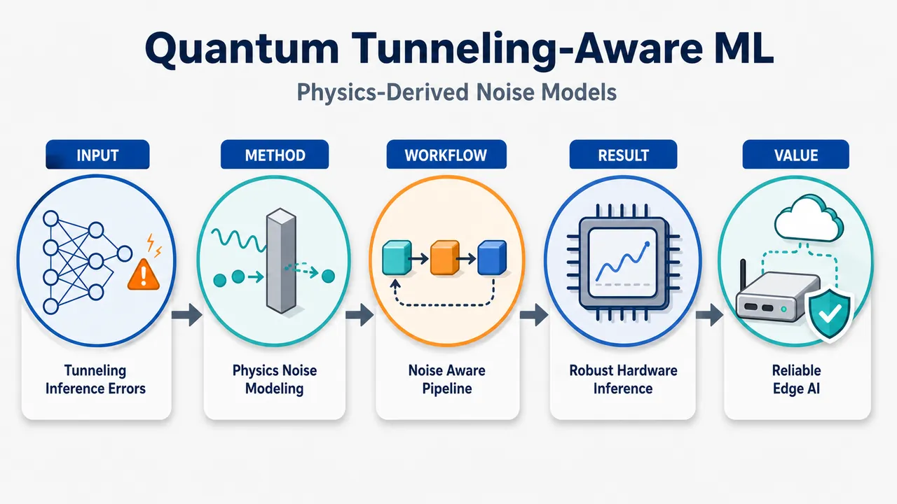
研究问题薄栅氧晶体管中的量子隧穿漏电会在硬件推理时产生非理想、非随机的位翻转与数值扰动，导致部署后的 AI 模型精度下降；核心问题是如何让机器学习模型在真实纳米器件噪声下保持可靠推理，而不是默认数字硬件完全理想。创新方法提出“量子隧穿感知”的机器学习框架，将晶体管物理机制推导出的隧穿漏电噪声注入模型训练与评估；Aha 点在于把硬件错误从抽象随机噪声改为具有器件物理来源、结构化分布的噪声模型，使模型主动学习可容忍的错误模式。工作流程输入薄栅氧晶体管器件参数与 AI 推理模型；根据量子隧穿漏电机制建立物理噪声模型；将噪声映射为推理中的权重、激活或位级扰动；在训练、校准或鲁棒性测试阶段注入这些结构化错误；输出对隧穿漏电更稳健的部署模型与可靠性评估结果。关键结果实验重点表明，使用物理导出的隧穿噪声进行训练或验证，比假设理想硬件或使用普通随机噪声更能预测真实部署误差，并提升模型在漏电诱发推理错误下的鲁棒性与容错能力。应用价值该研究可用于低功耗、高密度纳米芯片上的 AI 部署，帮助边缘设备、传感器节点和先进制程加速器在器件漏电不可避免的情况下维持可靠推理，减少过度保守的硬件冗余设计。## 核心概览 本文属于可靠机器学习/硬件感知 AI 部署方向。论文针对薄栅氧晶体管中的量子隧穿漏电导致的推理错误，提出物理导出的噪声模型，使模型部署可利用结构化错误容忍，而非默认硬件理想无误。 ## 方法要点 - 将薄栅氧晶体管中的量子隧穿漏电作为 AI 推理错误的物理来源进行建模。 - 构建“物理导出”的噪声模型，而不是采用纯经验或抽象随机噪声假设。 - 将该噪声模型用于机器学习推理部署场景，以评估或提升硬件非理想条件下的鲁棒性。 - 强调利用“结构化错误容忍”来适配硬件错误，而非假设数字硬件完全可靠。 - 具体模型形式、训练流程、数据集、网络结构和实验设置：摘要未详述。 ## 关键结果 - 摘要明确指出，该工作关注量子隧穿漏电引发的推理错误。 - 摘要明确提出了面向该类错误的物理导出噪声模型。 - 摘要认为 AI 部署可以利用结构化错误容忍机制，而不是依赖理想数字硬件假设。 - 是否在准确率、鲁棒性、能耗或硬件容错方面取得定量提升：摘要未详述。 ## 创新性判断 - 可能的新颖点在于：将薄栅氧晶体管的量子隧穿漏电机制直接引入机器学习噪声建模，用于推理鲁棒部署。 - 相比常见的独立同分布随机噪声、比特翻转或高斯噪声假设，该方法可能更贴近底层器件物理，因此更具硬件现实性。 - “结构化错误容忍”可能意味着该工作不仅模拟错误，还尝试利用错误分布的结构特征进行鲁棒部署；但具体机制摘要未详述。 - 创新性强弱仍不确定，因为摘要未提供与既有硬件感知训练、近似计算、噪声注入训练或器件级可靠性建模工作的具体比较。 -
04
机器学习谱反卷积分辨 FeTe0.55Se0.45 中 Majorana 零模📊 含图深析Deciphering Majorana Zero Modes in Topological Superconductor FeTe0.55Se0.45 with Machine-Learning-Assisted Spectral Deconvolution
💡 亮点：谱反卷积区分 FeTe0.55Se0.45 的零模与杂散态。
📖 展开分析 + 配图
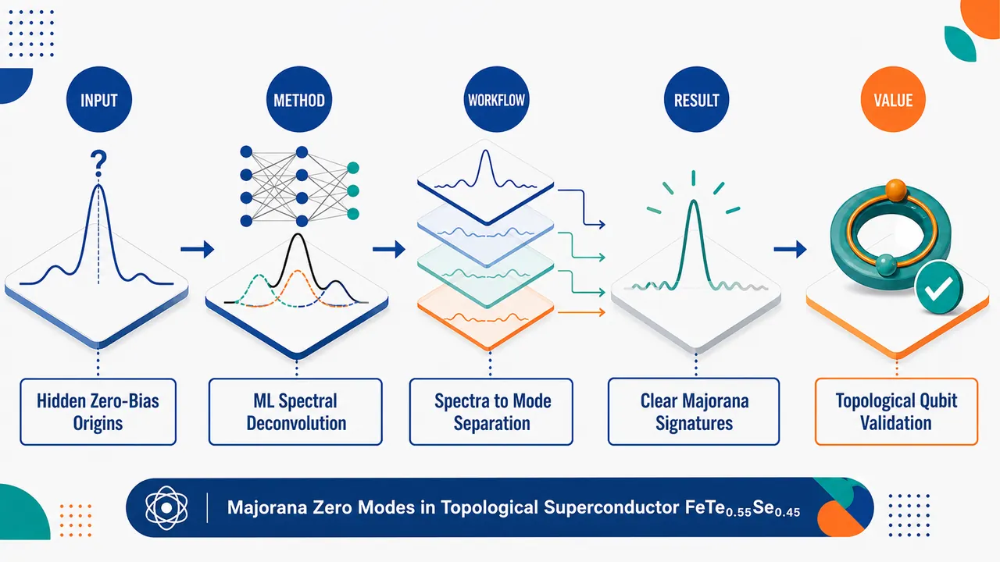
研究问题在拓扑超导体 FeTe0.55Se0.45 的扫描隧道谱中，零偏压电导峰可能来自马约拉纳零模，也可能来自杂质态、涡旋态或其他复杂能隙内态；核心问题是如何从重叠、混杂的谱信号中可靠分辨真正的马约拉纳零模指纹。创新方法引入机器学习辅助的谱解卷积方法，将复杂隧道谱拆分为多个隐藏的能隙内态成分；Aha 点在于不直接依赖单个零偏压峰形状判断，而是用数据驱动方式分离谱峰来源，提取更纯净的马约拉纳零模候选信号。工作流程输入 FeTe0.55Se0.45 拓扑超导样品的局域隧道谱数据；机器学习模型学习谱线中的重叠峰、背景与能隙结构；执行谱解卷积，分离不同能隙内态；对零能附近成分进行空间分布、能量位置和谱形分析；输出马约拉纳零模与非马约拉纳零偏压峰的判别结果。关键结果机器学习解卷积揭示了原始谱中被混叠掩盖的多个能隙内态，能够更清楚地区分稳定零能信号与普通零偏压峰来源，提高了 FeTe0.55Se0.45 中马约拉纳零模识别的可靠性和谱学解释精度。应用价值为拓扑超导材料中马约拉纳零模的实验证据判读提供更稳健的分析工具，可减少误判零偏压峰的风险，并推动基于马约拉纳准粒子的拓扑量子计算器件筛选与验证。## 核心概览 该论文属于拓扑超导与马约拉纳零模识别方向，利用机器学习辅助谱解卷积分析 FeTe0.55Se0.45 中复杂能隙内态。 ## 方法要点 - 研究对象是拓扑超导材料 FeTe0.55Se0.45。 - 采用“机器学习辅助谱解卷积”方法处理谱学数据。 - 目标是从复杂能隙内态中分离不同谱成分。 - 将分离结果用于区分马约拉纳零模与其他零偏压电导峰来源。 - 具体机器学习模型、训练数据、谱学实验类型与解卷积流程，摘要未详述。 ## 关键结果 - 摘要明确指出，该方法可用于分离复杂能隙内态。 - 摘要明确指出，其应用目标是区分马约拉纳零模和其他零偏压电导峰来源。 - 是否实际确认 FeTe0.55Se0.45 中存在马约拉纳零模、区分准确率如何、对比基线如何，摘要未详述。 ## 创新性判断 - 可能的新颖点在于将机器学习辅助的谱解卷积用于拓扑超导 FeTe0.55Se0.45 的能隙内态解析。 - 相比仅凭零偏压电导峰判定马约拉纳零模，该工作可能强调对不同零偏压峰来源进行分离和判别。 - 其创新性强弱取决于机器学习解卷积方法是否新、是否优于传统谱分析、是否经系统验证；这些摘要未详述，因此只能作有限判断。 -
05
通用量子变换器📊 含图深析Universal Quantum Transformer
💡 亮点：量子变换器瞄准离散对称和非交换代数学习。
📖 展开分析 + 配图
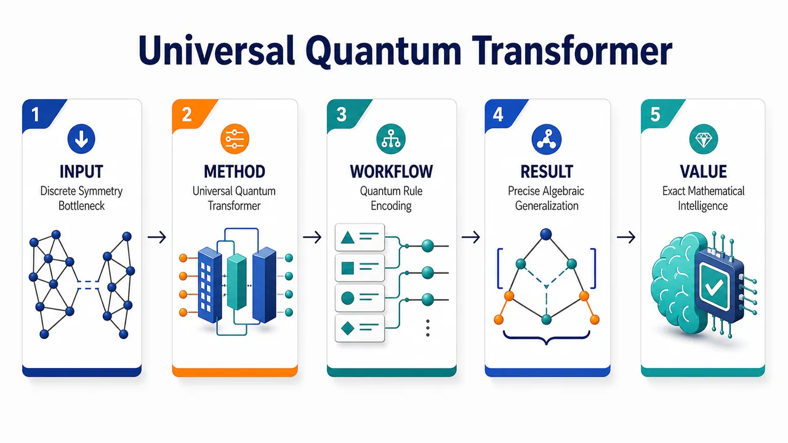
研究问题连续空间神经网络在处理离散数学结构时存在表达瓶颈：难以精确表示模运算、非交换代数等具有离散对称性的规则，导致模型对严格数学规律的学习不稳定、不精确。创新方法提出“通用量子变换器”，将量子表示机制引入 Transformer，使模型能够以更适合离散对称结构的方式编码数学对象；Aha 点在于用量子态式表示增强对模运算和非交换代数规则的精确建模能力。工作流程输入包含离散数学规则或代数结构的数据；模型将其映射为量子化表示；通过通用量子变换器进行结构保持的注意力计算与规则组合；最终输出更精确的数学关系预测或符号结构表示。关键结果相比普通连续神经网络，通用量子变换器更适合捕捉离散对称性，在模运算、非交换代数等任务中有望实现更高精度、更强泛化和更稳定的规则表达。应用价值该研究为神经网络学习精确数学结构提供新路径，可用于符号推理、代数计算、密码学相关模运算建模、量子计算表示学习以及需要严格规则泛化的科学智能系统。## 核心概览 本文属于量子机器学习/神经网络架构方向，针对传统连续空间神经网络难以精确表示模运算、非交换代数等离散对称规则的问题，提出“通用量子变换器”以增强对精确数学结构的表达能力。 ## 方法要点 - 提出一种名为 Universal Quantum Transformer 的模型架构，目标是改进神经网络对离散数学规则的表示。 - 关注模运算、非交换代数等具有离散对称性或代数结构的任务。 - 方法核心在于利用“量子变换器”机制来增强对精确数学结构的建模能力。 - 摘要未详述具体量子线路设计、注意力机制形式、训练方法或复杂度分析。 ## 关键结果 - 摘要明确指出，该方法旨在解决连续空间神经网络难以精确表达某些离散对称规则的问题。 - 摘要声称提出的通用量子变换器能够增强对精确数学结构的表示。 - 摘要未详述实验结果、基准任务、性能提升幅度或理论证明。 ## 创新性判断 - 可能的新颖点在于将量子计算/量子表示机制与 Transformer 类架构结合，用于表达传统连续神经网络不擅长的离散代数规则。 - 相比一般神经网络对数学规律的近似学习，该工作可能强调对模运算、非交换代数等结构的更精确表示。 - 但由于摘要极简，无法确定其创新是体现在模型架构、量子线路设计、理论表达能力证明，还是实验任务设置；这些摘要未详述。 -
06
Slater-Koster 约束图注意力预测电子结构📊 含图深析Transferable electronic structure prediction via Slater-Koster constrained graph attention neural network
💡 亮点：Slater-Koster 约束提升电子结构模型跨材料迁移。
📖 展开分析 + 配图
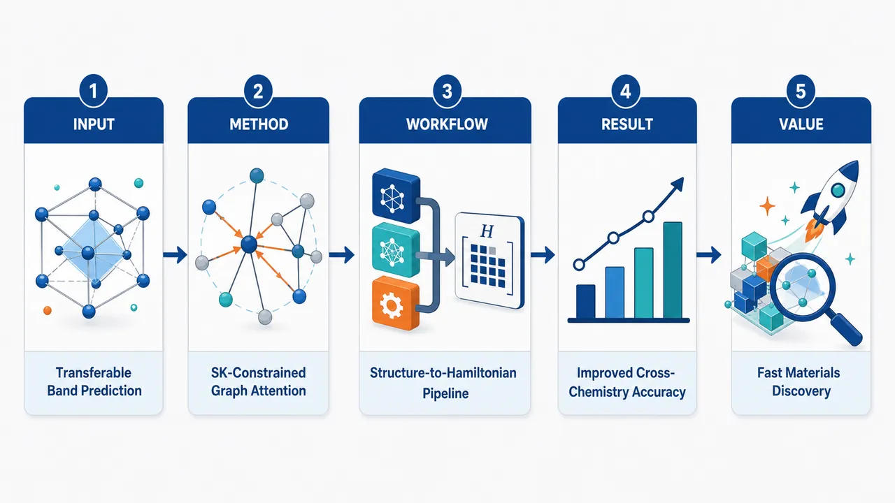
研究问题如何让神经网络在不同化学组成、不同材料体系之间可靠预测电子结构，尤其是避免纯数据驱动模型在跨元素、跨晶体环境时泛化能力不足的问题。创新方法将 Slater-Koster 物理约束嵌入图注意力神经网络：用原子图表示材料结构，用注意力学习局域化学环境，同时强制输出符合物理哈密顿量的轨道耦合形式，使模型不只是拟合能带，而是学习可迁移的电子结构规则。工作流程输入晶体原子结构与元素信息，构建以原子为节点、近邻相互作用为边的材料图；图注意力层提取局域键合环境与轨道相互作用特征；Slater-Koster 约束模块生成物理一致的哈密顿量矩阵；对哈密顿量求解得到能带、态密度等电子结构输出。关键结果相比普通纯数据神经网络，该方法在跨化学组成预测中表现出更强可迁移性和更稳定的电子结构精度，能够更好重建材料能带特征，降低在未知材料体系上的泛化误差。应用价值为高通量材料筛选提供快速、物理可信的电子结构预测工具，可减少昂贵第一性原理计算成本，加速半导体、拓扑材料、量子材料和功能材料的发现。## 核心概览 该论文属于机器学习辅助电子结构预测方向，提出以 Slater-Koster 物理约束增强的图注意力网络，用于提升跨化学组成的可迁移性。 ## 方法要点 - 使用图注意力神经网络建模材料或原子结构中的局域环境与相互作用。 - 引入 Slater-Koster 形式作为物理哈密顿量约束，使模型输出更符合电子结构理论。 - 目标是预测电子结构相关量，具体预测对象摘要未详述。 - 通过物理约束缓解纯数据驱动模型在不同化学组成间泛化能力不足的问题。 - 训练数据、网络结构细节、损失函数与评测基准摘要未详述。 ## 关键结果 - 摘要明确指出该方法增强了跨化学组成的电子结构预测可迁移性。 - 摘要指出该方法可缓解纯数据模型泛化不足的问题。 - 具体精度提升、对比模型、测试体系和数值结果摘要未详述。 ## 创新性判断 - 可能的新颖点在于将 Slater-Koster 型物理哈密顿量约束与图注意力网络结合，用物理结构限制模型表达空间，从而提升跨组成泛化能力。 - 相比纯神经网络电子结构预测，该方法的创新性可能体现在“物理先验 + 图神经网络注意力机制”的结合。 - 是否首次提出此类 Slater-Koster 约束图注意力框架、以及相对已有物理约束 GNN 的具体差异，摘要未详述，无法确定。 -
07
机器学习分子动力学研究 TiO₂ 极化子输运📊 含图深析Polaron Transport in TiO₂ from Machine Learning Molecular Dynamics
💡 亮点：机器学习动力学解析 TiO₂ 极化子各向异性迁移。
📖 展开分析 + 配图
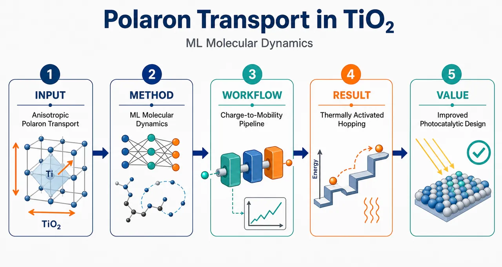
研究问题TiO₂ 中过剩电荷载流子会形成局域化极化子，但其迁移率低、输运方向依赖强；核心问题是揭示极化子在晶格热涨落和各向异性结构中如何跳跃迁移，以及这种微观机制如何限制光电催化电荷传输。创新方法将机器学习势能面用于分子动力学模拟，以接近第一性原理精度、远超传统计算的时间尺度追踪 TiO₂ 晶格中极化子与局部结构畸变的耦合运动，捕捉真实热环境下的电荷跳跃路径与各向异性输运。工作流程输入 TiO₂ 晶体结构与过剩电子/空穴载流子信息；通过第一性原理数据训练机器学习分子动力学模型；在有限温度下模拟晶格振动、局部畸变和极化子形成；统计极化子在不同晶向上的跳跃事件、扩散轨迹与迁移率；输出 TiO₂ 中各向异性极化子输运图景。关键结果机器学习分子动力学揭示 TiO₂ 中极化子输运并非连续自由移动，而是伴随晶格畸变的热激活跳跃；不同晶向上的跳跃频率和路径存在显著差异，解释了过渡金属氧化物中低迁移率和强各向异性电荷输运现象。应用价值为设计高效 TiO₂ 光催化、光电极和过渡金属氧化物器件提供微观指导：可通过晶向调控、缺陷工程、应变或掺杂来优化极化子迁移路径，降低电荷复合，提高光电催化电荷分离与传输效率。## 核心概览 本文利用机器学习分子动力学研究 TiO₂ 中过剩电荷载流子的极化子迁移，属于过渡金属氧化物中电荷输运/光电催化相关的计算材料研究。 ## 方法要点 - 采用机器学习分子动力学模拟 TiO₂ 中过剩电荷载流子的运动。 - 研究对象是 TiO₂ 中的极化子输运行为。 - 关注低迁移率与各向异性输运机制。 - 具体机器学习势、训练数据来源、电子结构方法、模拟温度与时间尺度等摘要未详述。 ## 关键结果 - 摘要明确指出论文聚焦 TiO₂ 中过剩电荷载流子迁移。 - 研究目标是理解过渡金属氧化物光电催化中低迁移率的来源。 - 摘要强调了 TiO₂ 极化子输运具有各向异性特征。 - 具体迁移率数值、扩散系数、能垒、温度依赖或不同晶向结果摘要未详述。 ## 创新性判断 - 可能的新颖点在于将机器学习分子动力学用于 TiO₂ 极化子输运研究，以突破传统第一性原理分子动力学在时间尺度和采样上的限制；但摘要未说明与已有方法的定量比较。 - 相比静态缺陷/小极化子模型，该工作可能更强调有限温度下的动态迁移机制和各向异性输运；这一判断基于摘要表述，具体机制摘要未详述。 - 若论文确实能用机器学习动力学直接连接极化子迁移、低迁移率和光电催化性能，则其创新性可能体现在多尺度动力学描述；但摘要未给出足够细节确认其突破程度。 -
08
机器学习如何加速 CALPHAD 自由能建模📊 含图深析How Can Machine Learning Accelerate CALPHAD Free Energy Modeling?
💡 亮点：机器学习扩展 CALPHAD 对新化学体系的自由能预测。
📖 展开分析 + 配图
研究问题CALPHAD 自由能建模在新合金/新化学空间中受两大瓶颈限制：实验与第一性原理热力学数据稀缺，以及传统模型过度依赖以成分为主的固定函数形式，导致外推预测能力不足。创新方法将机器学习引入 CALPHAD 自由能函数构建，用数据驱动模型学习成分、温度与相稳定性之间的复杂关系，作为传统参数化自由能模型的增强器；Aha 点是让自由能曲面不再只由预设解析函数描述，而由可泛化的机器学习模型辅助塑形。工作流程输入有限的实验热力学数据、相图数据和计算数据；提取成分、温度、相类型等特征；训练机器学习自由能模型或混合 CALPHAD-ML 模型；生成连续自由能曲面；计算相平衡与相稳定性；输出未知化学空间的热力学预测结果。关键结果机器学习方法可在数据有限条件下加速自由能建模，改善对未测成分区域和新化学体系的热力学外推能力，并减少传统 CALPHAD 参数拟合对大量人工调参与密集数据的依赖。应用价值为新材料和复杂合金设计提供更快的热力学预测工具，可用于快速筛选候选成分、预测相稳定性、构建相图，并推动 CALPHAD 数据库向更广阔化学空间扩展。## 核心概览 本文探讨用机器学习加速 CALPHAD 自由能建模，方向属于计算热力学与机器学习交叉，目标是缓解数据稀缺和传统成分函数形式限制，提升新化学空间的热力学预测能力。 ## 方法要点 - 将机器学习引入 CALPHAD 自由能建模框架。 - 关注自由能模型对“新化学空间”的外推或泛化预测能力。 - 针对传统 CALPHAD 中数据稀缺问题提出机器学习辅助思路。 - 针对以成分为主的传统函数形式限制，尝试用更灵活的机器学习模型表示自由能。 - 具体模型类型、训练数据来源、损失函数、验证体系等摘要未详述。 ## 关键结果 - 摘要明确指出：机器学习自由能建模可用于增强 CALPHAD 在新化学空间中的热力学预测能力。 - 摘要明确指出：该工作针对 CALPHAD 的两个局限，即数据稀缺和传统函数形式受限。 - 是否给出定量精度提升、具体材料体系验证、与传统 CALPHAD 的数值对比，摘要未详述。 ## 创新性判断 - 可能的新颖点在于将机器学习用于 CALPHAD 自由能建模，而不仅是单独预测相图或热力学性质；这一点有望增强模型表达能力。 - 可能强调面向“新化学空间”的热力学预测，即提升传统 CALPHAD 在缺少实验/计算数据区域的泛化能力；但具体是否实现显著外推能力，摘要未详述。 - 相比传统 CALPHAD 依赖预设成分函数形式，该工作可能尝试以机器学习提供更灵活的自由能表达；不过其物理约束、可解释性和热力学一致性处理方式，摘要未详述。 -
09
从原子学习设计耐久 PtCo 燃料电池催化剂📊 含图深析Learning From Atoms: Machine Learning Enabled Design of Durable PtCo Fuel Cell Catalysts
💡 亮点：机器学习用于原子尺度 PtCo 燃料电池催化剂设计。
📖 展开分析 + 配图
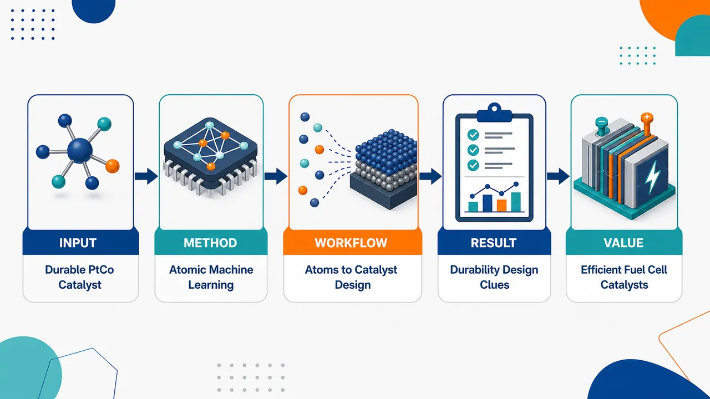
研究问题如何从原子尺度理解 PtCo 催化剂中铂、钴原子的结构—性能关系，并据此设计在燃料电池工况下更耐久、抗降解的 PtCo 阴极催化剂。创新方法将原子尺度信息作为机器学习输入，让模型从 PtCo 催化剂的局部原子排列、成分分布与潜在稳定性特征中学习耐久性规律，用数据驱动方式反向指导催化剂结构设计。工作流程收集 PtCo 催化剂原子级结构与性能数据 → 提取原子排列、合金组成、局部环境等特征 → 训练机器学习模型识别耐久性相关模式 → 筛选或优化 PtCo 结构方案 → 指导制备更稳定的燃料电池催化剂。关键结果研究表明，机器学习能够把原子尺度结构信息转化为可用于催化剂设计的预测线索，帮助识别更耐久的 PtCo 催化剂设计方向；摘要信息未提供具体性能提升数值。应用价值为质子交换膜燃料电池阴极催化剂开发提供更高效的设计路径，减少依赖反复试错实验，加速低铂、高耐久 PtCo 催化剂的发现与优化。## 核心概览 该论文属于燃料电池电催化剂与机器学习辅助材料设计方向，旨在利用原子尺度信息和机器学习设计更耐久的 PtCo 催化剂；摘要未详述具体模型、实验体系或性能数值。 ## 方法要点 - 使用机器学习从原子尺度信息中学习 PtCo 催化剂的结构—性能关系。 - 目标是指导或优化耐久 PtCo 燃料电池催化剂的设计。 - 研究对象为 PtCo 基燃料电池催化剂，可能聚焦耐久性提升；具体催化反应、测试条件摘要未详述。 - 是否结合实验表征、第一性原理计算或高通量筛选，摘要未详述。 - 机器学习模型类型、输入特征、训练数据来源和验证方式，摘要未详述。 ## 关键结果 - 论文声称实现了机器学习辅助的耐久 PtCo 燃料电池催化剂设计。 - 题名强调“从原子学习”，说明原子尺度信息被用于催化剂设计决策。 - 摘要未给出催化活性、耐久性、寿命衰减、质量活性或电池性能等具体数值。 - 摘要未明确说明所设计催化剂相较传统 PtCo 或商业 Pt/C 的提升幅度。 ## 创新性判断 - 可能的新颖点在于将原子尺度结构信息与机器学习结合，用于指导 PtCo 燃料电池催化剂的耐久性设计，而不仅是经验试错。 - 相对传统催化剂开发，该工作可能强调数据驱动或模型驱动的材料优化路径。 - 若论文确实实现了从原子特征到耐久性预测再到实验验证的闭环设计，则创新性会较强；但摘要未详述，需全文确认。 - 具体创新是否体现在新模型、新描述符、新合成策略或新型 PtCo 结构，摘要无法确定。 -
10
用势能面平滑性指标指导机器学习势📊 含图深析From Evaluation to Design: Using Potential Energy Surface Smoothness Metrics to Guide Machine Learning Interatomic Potential Architectures
💡 亮点：势能面平滑性成为机器学习势架构设计指标。
📖 展开分析 + 配图
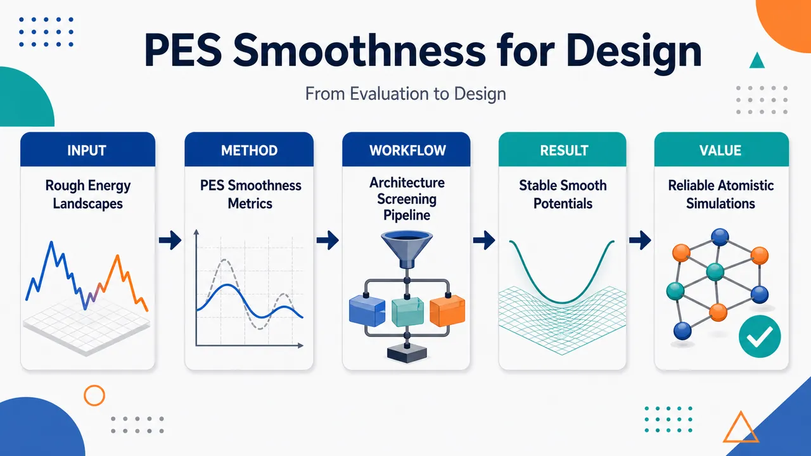
研究问题机器学习原子间势在训练误差很低时，仍可能在分子动力学等下游模拟中产生不连续、震荡或粗糙的量子势能面，导致力预测不稳定、轨迹异常和物理可靠性下降；核心问题是如何量化这种势能面光滑性，并用它反向指导模型架构设计。创新方法提出“PES 光滑性度量”作为从评估走向设计的桥梁：不只比较能量/力误差，而是直接刻画势能面在构型空间中的平滑程度，用可视化的粗糙度信号识别架构缺陷，并据此选择或改造更符合量子势能面连续性的机器学习原子间势结构。工作流程输入原子构型与参考量子化学势能面数据；训练不同机器学习原子间势架构；在构型扰动路径或采样区域上计算势能、力及其变化；用 PES 光滑性度量评估势能面是否平滑连续；对比不同架构的粗糙度图谱；输出更平滑、更适合下游模拟的势函数设计建议。关键结果PES 光滑性度量能够揭示传统误差指标难以发现的势能面粗糙区域，区分表面看似精度相近但模拟稳定性不同的模型架构；结果表明，光滑性可作为架构选择与优化的重要依据，帮助获得更接近量子势能面的连续、稳定原子间势。应用价值为机器学习原子间势的开发提供可操作的设计准则，使模型不仅在测试集上准确，而且在分子动力学、材料模拟、化学反应路径搜索等真实模拟任务中更稳定可靠；可减少因势能面不光滑导致的非物理振荡、模拟崩溃和错误科学结论。## 核心概览 该论文属于机器学习原子间势与分子/材料模拟方向，提出用势能面（PES）光滑性度量来评估并指导势函数架构设计。 ## 方法要点 - 提出针对机器学习原子间势的 PES 光滑性度量，用于衡量其对量子势能面光滑性的保持程度。 - 将该度量从单纯“评估工具”扩展为“设计指导”，用于影响或选择机器学习势函数架构。 - 关注下游模拟中势能面不光滑可能带来的问题，而非仅关注常规预测精度；具体度量定义与计算流程摘要未详述。 - 涉及哪些机器学习势架构、数据集或量子化学参考方法，摘要未详述。 ## 关键结果 - 论文指出，机器学习原子间势在下游模拟中可能破坏量子势能面的光滑性。 - 提出的 PES 光滑性度量可用于评估这一问题。 - 该度量还可进一步用于指导机器学习原子间势的架构设计。 - 是否展示了具体性能提升、对比结果或模拟稳定性改善，摘要未详述。 ## 创新性判断 - 可能的新颖点在于：将“势能面光滑性”作为机器学习原子间势的重要评价维度，而不只依赖能量/力误差等常规指标。 - 另一个潜在创新是把光滑性度量用于架构设计，即从“评价模型”转向“指导模型构造”。 - 相比同方向工作，该论文可能强调下游模拟可靠性与势能面几何性质之间的联系；但具体相对优势、适用范围和验证强度摘要未详述，创新性判断存在不确定性。 -
11
面向垂直供电的三栅 GaN FinFET 主动学习优化📊 含图深析PALTO: Physics-Informed Active Learning for Tri-Gate FinFET Design Optimization for Vertical Power Delivery
💡 亮点：物理主动学习加速三栅 GaN FinFET 设计。
📖 展开分析 + 配图
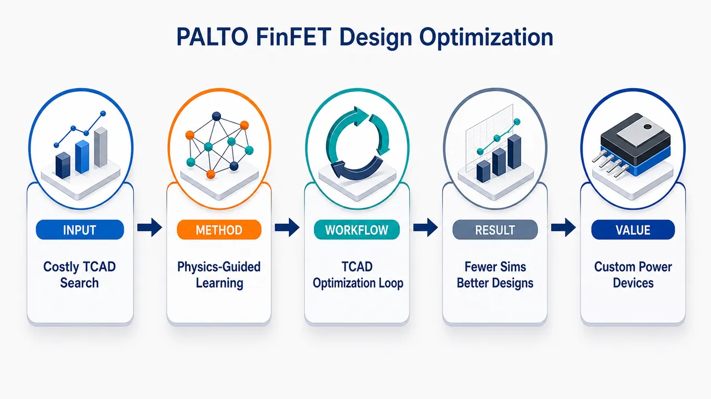
研究问题面向垂直供电的 GaN 三栅 FinFET 设计空间庞大，传统 TCAD 参数扫描成本高、周期长；核心问题是在少量仿真样本下，快速找到满足应用需求的最优器件结构与电学性能组合。创新方法提出 PALTO：将物理约束嵌入主动学习框架，用器件物理规律指导样本选择与模型更新，让算法优先探索最有信息量、最可能改进性能的 FinFET 设计点，减少盲目 TCAD 扫描。工作流程输入 GaN 三栅 FinFET 的几何参数、材料参数与垂直供电设计目标；先用少量 TCAD 数据训练物理约束代理模型；主动学习模块评估不确定性与潜在收益；选择关键新设计点进行 TCAD 验证；迭代更新模型；最终输出面向应用定制的优化器件设计。关键结果PALTO 在保持物理一致性的同时显著降低高成本 TCAD 扫描数量，并更高效地定位适合垂直供电场景的三栅 FinFET 优化结构，实现设计效率提升与性能导向搜索。应用价值为功率电子和垂直供电芯片提供快速、低成本的 GaN FinFET 设计优化路径，可支持不同应用场景下的定制化器件开发，缩短从仿真探索到器件方案确定的周期。## 核心概览 本文提出 PALTO，一种物理约束主动学习方法，用于优化面向垂直供电的 GaN 三栅 FinFET 设计，目标是减少高成本 TCAD 扫描并支持应用定制器件设计。 ## 方法要点 - 采用主动学习策略，以降低对大规模 TCAD 参数扫描的依赖。 - 引入物理约束或物理信息，以提高器件设计优化过程的效率与可靠性。 - 研究对象为 GaN 三栅 FinFET，应用场景指向垂直供电架构。 - 面向应用定制器件设计进行优化；具体优化变量、目标函数和采样策略摘要未详述。 ## 关键结果 - PALTO 可用于优化面向垂直供电的 GaN 三栅 FinFET 设计。 - 该方法减少了对高成本 TCAD 扫描的依赖。 - 论文声称其服务于应用定制器件设计。 - 具体性能提升幅度、对比基线、实验规模和器件指标摘要未详述。 ## 创新性判断 - 可能的新颖点在于将“物理约束”与“主动学习”结合，用于 GaN 三栅 FinFET 的设计优化。 - 相比常规 TCAD 穷举扫描或纯数据驱动优化，PALTO 可能通过物理先验减少采样成本；但摘要未给出具体机制，故该判断具有不确定性。 - 面向“垂直供电”的 GaN 三栅 FinFET 优化可能是其应用层面的特色，但该方向中已有工作的覆盖情况摘要未说明，无法确认其独创程度。 -
12
深度学习加速钨中氢输运动力学蒙特卡洛📊 含图深析Deep Learning-Accelerated Dynamic Kinetic Monte Carlo Simulation for Hydrogen Transport in Tungsten
💡 亮点：深度学习加速钨壁氢再循环的动态蒙特卡洛模拟。
📖 展开分析 + 配图
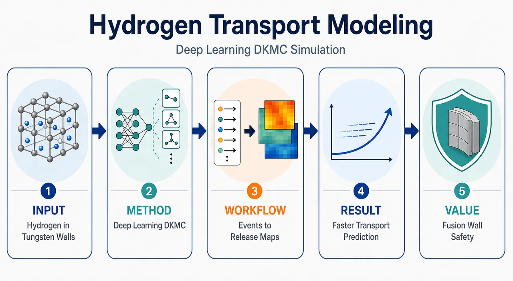
研究问题聚变堆钨壁中氢同位素会不断注入、扩散、滞留并释放，导致钨材料氢饱和与燃料再循环难以预测；核心问题是如何在保持物理精度的同时，高效模拟氢在钨中的长时间、多事件动态输运行为。创新方法将深度学习嵌入动态动力学蒙特卡洛模拟，用神经网络快速预测或替代高频重复的跃迁、扩散与释放事件计算，形成“物理事件规则 + 学习型加速器”的混合模拟框架，大幅减少传统蒙特卡洛在复杂时间演化中的计算负担。工作流程输入钨壁结构、氢注入条件、温度与扩散/俘获等物理参数；动态动力学蒙特卡洛生成氢原子扩散、俘获、解俘和表面释放事件；深度学习模型对关键事件概率或速率进行快速估计；模拟随时间推进，输出氢浓度分布、滞留量、释放通量和再循环行为。关键结果深度学习加速后，可更快获得氢在钨中的时空输运图像，捕捉氢饱和、滞留累积和释放峰值等关键现象；相比纯动态动力学蒙特卡洛，计算效率显著提升，同时保留对氢扩散与释放动力学的预测能力。应用价值为聚变堆等离子体面对材料设计提供快速预测工具，可评估钨壁氢滞留风险、燃料再循环强度和运行安全边界，帮助优化壁材料、温度窗口与氢同位素管理策略。## 核心概览 该论文将深度学习用于加速动态动力学蒙特卡洛，研究聚变堆钨壁中氢的输运、饱和与释放/再循环行为，属核聚变材料模拟方向。 ## 方法要点 - 采用动态动力学蒙特卡洛（dynamic kinetic Monte Carlo, DKMC）模拟氢在钨中的输运与释放过程。 - 引入深度学习模型以加速 DKMC 模拟流程。 - 研究对象为聚变堆钨壁材料中的氢行为，聚焦氢饱和与再循环问题。 - 具体深度学习架构、训练数据来源、加速策略与耦合方式：摘要未详述。 ## 关键结果 - 论文声称深度学习可用于加速动态动力学蒙特卡洛模拟。 - 模拟目标涵盖氢在钨中的输运与释放行为。 - 研究服务于理解或预测聚变堆钨壁中的氢饱和与再循环问题。 - 定量加速比、精度误差、与传统 DKMC 或实验对比结果：摘要未详述。 ## 创新性判断 - 可能的新颖点在于将深度学习与动态动力学蒙特卡洛结合，用于聚变钨壁中氢输运/释放模拟的加速。 - 相比传统纯 DKMC 方法，该工作可能旨在降低长时间尺度或大规模氢输运模拟的计算成本。 - 其创新性强弱取决于深度学习如何嵌入 DKMC、是否保持物理一致性、以及加速与精度表现；这些摘要未详述，因此只能作有限判断。 -
13
通用神经网络势与保多样遗传算法高效预测晶体结构📊 含图深析Efficient crystal structure prediction using universal neural network potential with diversity preservation in genetic algorithms
💡 亮点：通用神经网络势加保多样遗传算法加速晶体结构预测。
📖 展开分析 + 配图
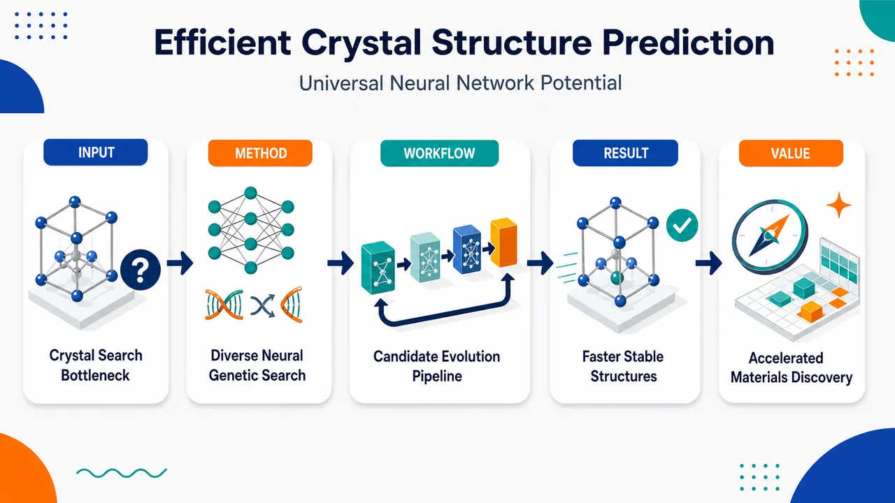
研究问题晶体结构预测需要在巨大构型空间中寻找最低能稳定结构；传统第一性原理能量评估成本高、搜索慢，遗传算法还容易早熟收敛到相似结构，错过潜在稳定晶型。创新方法将通用神经网络势作为快速能量评估器嵌入遗传算法，并在进化过程中加入结构多样性保持机制：既用低成本模型快速筛选候选晶体，又避免种群被少数相似低能结构垄断，形成“快评估 + 广探索”的晶体搜索策略。工作流程输入给定化学体系与晶体搜索条件；生成初始候选晶体种群；用通用神经网络势快速计算结构能量并排序；通过选择、交叉、变异产生新晶体；用多样性保持策略剔除过度相似结构、保留不同构型族；迭代进化直至收敛；输出低能稳定晶体结构，供后续原子模拟或高精度计算使用。关键结果该方法以低成本神经网络势替代大量昂贵能量计算，显著提高晶体结构搜索效率；多样性保持机制扩大了结构空间覆盖，降低遗传算法陷入局部最优的风险，更容易发现给定体系的稳定或候选稳定晶体结构。应用价值可作为材料发现与原子模拟的高效前处理工具，快速为未知或复杂材料体系提供可靠初始晶体结构，减少第一性原理筛选负担，加速新材料设计、相稳定性分析和后续分子/原子尺度模拟。## 核心概览 该论文属于晶体结构预测与机器学习势能方向，结合通用神经网络势和保持多样性的遗传算法，以低成本搜索稳定晶体结构。 ## 方法要点 - 使用通用神经网络势进行晶体结构的能量评估，以降低传统高精度计算的成本。 - 将神经网络势嵌入遗传算法框架，用于搜索给定体系的稳定结构。 - 在遗传算法中引入或强调“多样性保持”，以避免搜索过程过早收敛。 - 目标是为后续原子模拟提供晶体结构前处理或初始结构生成。 - 摘要未详述神经网络势的具体模型、训练数据、遗传算子、选择策略或多样性度量方式。 ## 关键结果 - 论文声称该方法能够以较低成本进行能量评估并搜索稳定晶体结构。 - 该方法面向给定体系的稳定结构预测，可作为后续原子模拟的前处理工具。 - 摘要未详述具体测试体系、预测精度、计算加速倍数、与传统方法的对比结果或成功率。 ## 创新性判断 - 可能的新颖点在于将“通用神经网络势”与“保持多样性的遗传算法”结合，用于更高效的晶体结构预测。 - 相比依赖第一性原理能量计算的遗传算法，该方法可能通过神经网络势显著降低搜索成本，但具体效率提升摘要未详述。 - 相比普通遗传算法，引入多样性保持可能有助于扩大结构搜索空间、减少陷入局部最优的风险；但多样性策略的具体设计和效果摘要未详述。 - 其创新性强弱取决于通用势的适用范围、多样性保持机制以及实证对比结果，摘要信息不足，无法做确定判断。 -
14
结构无关材料性质预测的 BiL-AttNet📊 含图深析BiL-AttNet: A deep learning architecture for structure-agnostic material property prediction
💡 亮点：BiL-AttNet 瞄准无需显式结构的材料性质预测。
📖 展开分析 + 配图
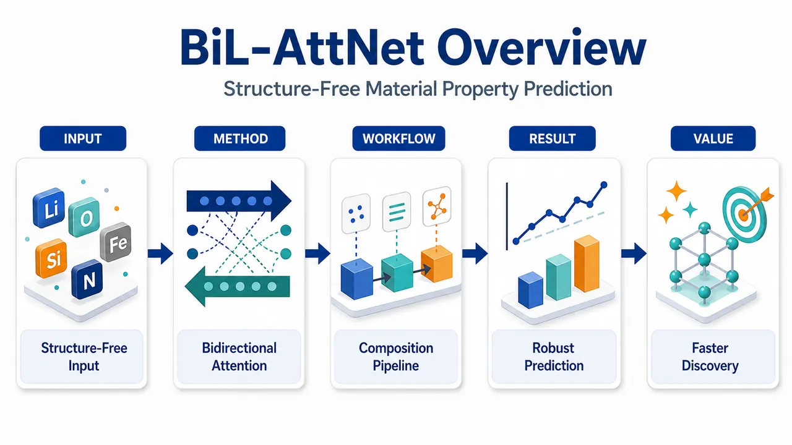
研究问题如何在没有统一晶体结构表征、结构信息缺失或难以标准化的情况下，仅依赖材料组成等结构无关信息，准确预测材料性质。创新方法提出 BiL-AttNet 深度学习架构，将双向序列建模与注意力机制结合：模型像“左右扫描材料组成序列”一样捕捉元素间关系，再用注意力突出对目标性质最关键的元素或组合，实现结构无关的材料性质预测。工作流程输入材料的组成/元素序列 → 元素特征嵌入为向量 → 双向网络从前后两个方向学习元素关系 → 注意力层为关键元素分配更高权重 → 融合全局材料表示 → 输出目标材料性质预测值。关键结果BiL-AttNet 在缺少统一结构描述的场景下仍能进行有效性质预测，证明注意力增强的双向深度网络可从组成信息中提取有用材料特征，提升结构无关预测的可行性与表现。应用价值适用于早期材料筛选、结构未知材料评估和大规模材料数据库预测，可降低对高质量晶体结构数据的依赖，加速新材料发现与性能预判。## 核心概览 本文提出 BiL-AttNet，一种用于材料性质预测的深度学习架构，方向属于计算材料学与材料信息学。其目标是在缺少统一结构表征的情况下，实现“结构无关”的材料性质预测。 ## 方法要点 - 提出名为 **BiL-AttNet** 的深度学习架构，用于材料性质预测。 - 方法定位为 **structure-agnostic（结构无关）**，即不依赖统一的材料结构表征。 - 具体网络组成、输入特征、训练策略和数据集信息，摘要未详述。 ## 关键结果 - 论文声称 BiL-AttNet 可用于在缺少统一结构表征时预测材料性质。 - 摘要未提供具体预测性能、对比基线、评价指标或实验数值。 - 摘要未说明其适用的材料类别、目标性质类型或泛化能力验证细节。 ## 创新性判断 - 可能的新颖点在于：针对材料性质预测中“结构表征不统一或不可用”的问题，提出一种结构无关的深度学习框架。 - 相比依赖晶体结构、图结构或原子坐标的常见材料模型，该方法可能尝试降低对结构输入的依赖；但具体如何实现，摘要未详述。 - 创新性判断具有不确定性，因为摘要未说明模型架构细节、与现有方法的差异化设计及实验优势。 -
15
异质系统熵预测的物理约束深度学习📊 含图深析Physics-Informed Deep Learning for Entropy Prediction in Heterogeneous Systems: Thermodynamic and Information-Theoretic Case Studies
💡 亮点：物理约束网络统一处理热力学与信息熵预测。
📖 展开分析 + 配图
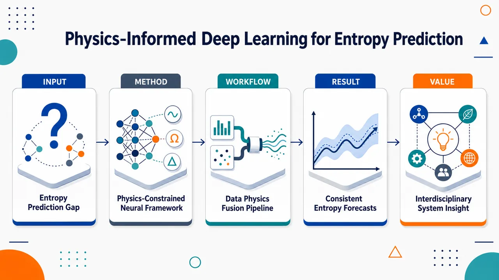
研究问题如何在热力学与信息论等异质系统中准确预测熵产生，同时避免传统物理信息神经网络过度依赖某一类特定微分方程或固定物理域的问题。创新方法构建面向熵预测的物理约束深度学习框架，将热力学规律与信息论约束嵌入神经网络训练，使模型不仅拟合数据，还受到熵产生机制、物理一致性和跨系统通用规律的共同约束。工作流程输入异质系统中的状态变量、热力学参数或信息论特征；神经网络提取复杂非线性关系；物理约束项将熵产生规律和守恒/一致性条件加入损失函数；通过联合优化得到满足数据拟合与物理规律的模型；输出不同系统场景下的熵产生预测结果。关键结果研究显示，物理约束深度学习可在热力学案例与信息论案例中实现更可靠的熵产生预测，相比纯数据驱动模型具有更好的物理一致性、泛化能力和跨异质系统适应性。应用价值该框架可用于复杂热系统、非平衡过程、信息传输与计算系统中的熵分析，为能源效率评估、系统不可逆性诊断和跨学科复杂系统建模提供可解释的智能预测工具。## 核心概览 本文提出一种用于热力学与信息论异质系统中熵产生预测的物理约束深度学习框架，方向属于 Physics-Informed Deep Learning / PINN 在熵建模与跨体系预测中的应用拓展。 ## 方法要点 - 构建物理约束深度学习框架，用于预测不同体系中的熵产生。 - 研究对象覆盖热力学体系与信息论体系，强调“异质系统”场景。 - 试图减少或突破传统 PINN 对特定微分方程域的依赖。 - 具体网络结构、损失函数形式、物理约束表达、训练数据来源等摘要未详述。 ## 关键结果 - 摘要明确指出该框架面向熵产生预测任务。 - 摘要明确声称其目标是突破传统 PINN 对特定微分方程域的依赖。 - 是否在实验中优于传统 PINN、机器学习基线或解析模型，摘要未详述。 - 具体案例、数据规模、预测精度、泛化能力和消融结果，摘要未详述。 ## 创新性判断 - 可能的新颖点在于将物理约束深度学习用于热力学与信息论两个不同类别体系中的熵产生预测，而非局限于单一物理方程场景。 - 另一可能创新是尝试构建不强依赖特定微分方程域的 PINN-like 框架，以增强跨系统适用性。 - 但由于摘要极短，无法判断其物理约束的具体形式、理论贡献深度或实验验证充分性；创新性强弱需阅读全文后确认。 -
16
考虑涂抹效应的电渗径向固结 PINN📊 含图深析Physics-Informed Neural Networks for Radial Consolidation of Combined Electroosmotic, Vacuum and Surcharge Preloading Considering Smear Effects
💡 亮点：多域 PINN 求解电渗—真空—堆载径向固结。
📖 展开分析 + 配图
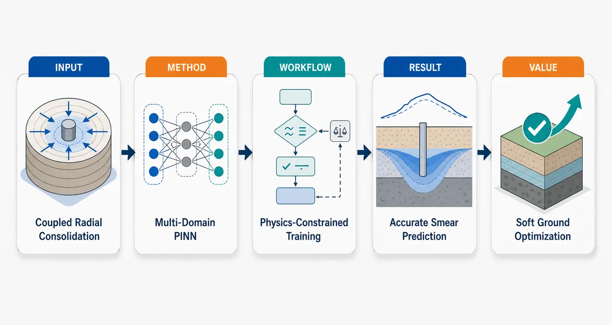
研究问题软土地基在电渗、真空预压与堆载预压共同作用下发生径向固结，且排水板周围存在低渗透性的涂抹区；核心问题是如何高效、准确求解这种多物理场耦合、分区参数突变的超孔隙水压力消散与固结过程。创新方法构建无量纲多域物理信息神经网络，将正常土区与涂抹区划分为不同计算域，在损失函数中嵌入径向固结控制方程、界面连续条件、边界条件和初始条件；通过比较三类 PINN 模型，识别最适合处理涂抹效应与多预压耦合问题的网络形式。工作流程输入土体固结参数、涂抹区半径与渗透系数、电渗参数、真空荷载、堆载荷载和无量纲时空坐标；将土体划分为涂抹区与正常区；PINN 在各子域内拟合孔压场；利用物理方程残差、界面匹配残差和边界残差联合训练；输出不同半径与时间下的超孔隙水压力分布、固结度演化和模型误差对比。关键结果无量纲多域 PINN 能准确复现含涂抹效应的电渗-真空-堆载径向固结解，较单域或普通 PINN 更能捕捉涂抹区界面处的孔压梯度突变与排水阻滞效应；模型在复杂边界和多荷载耦合条件下保持较高精度与稳定性。应用价值为软土地基加固设计提供快速可视化预测工具，可用于评估排水板涂抹损伤、电渗强度、真空压力和堆载方案对固结效率的影响，减少对传统网格数值模拟的依赖，辅助优化联合预压施工参数。## 核心概览 该文属于岩土固结数值模拟/科学机器学习方向，构建无量纲多域 PINN，求解含涂抹效应及电渗、真空、堆载耦合的径向固结问题。 ## 方法要点 - 采用物理信息神经网络（PINN）求解径向固结控制问题。 - 构建“无量纲”形式的模型，以处理固结方程或相关变量的尺度问题。 - 采用“多域 PINN”框架，可能用于刻画涂抹区与未涂抹区等分区特征；具体分域方式摘要未详述。 - 将电渗、真空预压和堆载预压的耦合作用纳入径向固结分析。 - 考虑涂抹效应，即排水板或井周围土体扰动对径向固结的影响。 - 比较三类 PINN 模型的适用性；三类模型的具体名称、结构和评价指标摘要未详述。 ## 关键结果 - 建立了用于该类耦合径向固结问题的无量纲多域 PINN 模型。 - 该模型面向含涂抹效应、电渗、真空和堆载共同作用下的径向固结求解。 - 论文比较了三类 PINN 模型的适用性。 - 各 PINN 模型的具体优劣、精度、收敛性或适用场景，摘要未详述。 ## 创新性判断 - 可能的新颖点在于将 PINN 用于“电渗—真空—堆载”耦合条件下的径向固结分析，而非单一预压或传统解析/数值方法；但具体相对已有工作的差异摘要未详述。 - “无量纲多域 PINN”可能是针对涂抹效应和多区域土体参数差异提出的技术处理，具有一定方法改进意义；但其具体网络设计与创新程度摘要未详述。 - 同时比较三类 PINN 模型的适用性，可能为该类岩土固结问题中 PINN 选型提供参考；但比较结论摘要未给出，创新性强弱无法进一步判断。 -
17
二维受挫量子反铁磁体零温残余向列序📊 含图深析Vestigial Nematic Order at Zero Temperature in Two-Dimensional Frustrated Quantum Antiferromagnets
💡 亮点：解析讨论 J₁-J₃ 量子反铁磁体零温向列序。
📖 展开分析 + 配图
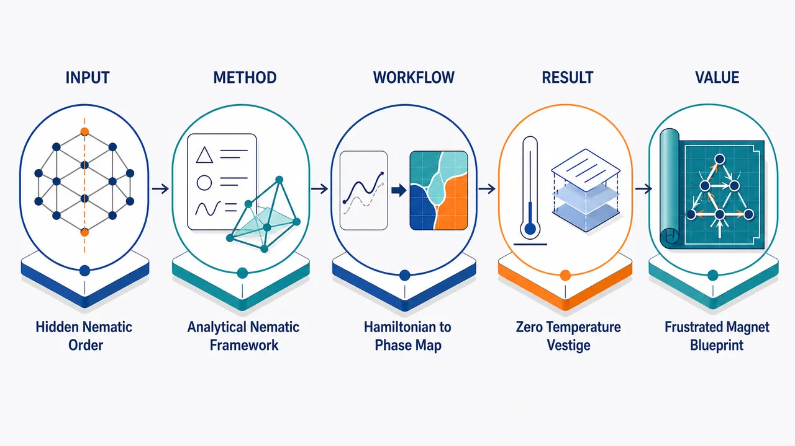
研究问题在二维平方晶格受挫量子 J₁-J₃ Heisenberg 反铁磁体中，零温量子涨落是否会在没有常规磁长程序的区域保留下破坏 C4 旋转对称性的“残余向列序”，以及它如何嵌入长期争议的相图。创新方法提出零温残余向列序的解析理论框架：把受挫反铁磁体中的磁序熔化与晶格旋转对称性破缺分离开来，捕捉“磁性消失但方向性仍在”的 Aha 点，用向列序参量刻画隐藏的电子/自旋各向异性。工作流程从平方晶格 J₁-J₃ Heisenberg 哈密顿量出发，分析受挫交换相互作用与量子涨落；构建低能解析描述；追踪磁序、螺旋/条纹倾向与向列序参量的变化；最终绘制零温相图中残余向列相所在区域。关键结果理论表明二维受挫量子反铁磁体在零温可出现残余向列序：即使传统磁长程序被强量子涨落破坏，系统仍能保留方向选择性并打破平方晶格四重旋转对称性，从而解释 J₁-J₃ 模型相图中的未解中间区域。应用价值为识别量子磁体中的隐藏有序态提供可视化相图与解析判据，可用于理解受挫磁性材料、量子自旋液体邻近相、铁基超导体相关向列性以及低维量子多体系统中的对称性破缺机制。## 核心概览 本文研究二维平方晶格量子 (J₁)-(J₃) Heisenberg 受挫反铁磁体相图，提出零温“残余向列序”的解析理论框架，属于受挫量子磁性与量子相变方向。 ## 方法要点 - 研究对象是平方晶格二维量子 (J₁)-(J₃) Heisenberg 反铁磁模型。 - 关注该模型相图中的零温残余向列序问题。 - 采用解析理论框架处理该长期未解问题；具体解析方法、近似方案或计算细节摘要未详述。 ## 关键结果 - 论文给出了零温残余向列序的解析理论框架。 - 该框架用于理解二维量子 (J₁)-(J₃) 受挫反铁磁体的相图。 - 摘要未详述具体相边界、临界点、序参量行为或与数值/实验结果的定量比较。 ## 创新性判断 - 可能的新颖点在于：针对平方晶格二维量子 (J₁)-(J₃) Heisenberg 反铁磁体中“零温残余向列序”这一长期未解问题，提出了一个解析理论框架。 - 相比仅依赖数值模拟或有限温理论的工作，该论文可能强调在零温量子极限下对向列序残留机制的解析理解。 - 但摘要信息极少，无法确定其具体创新来自新场论构造、新序参量描述、新相图推导，还是对已有理论的统一化。 -
18
用含 Born 有效电荷神经网络研究缺陷 ZrO₂ 离子迁移📊 含图深析Study of the ion mobility in defect-laden ZrO₂ under an electric field using neural network with predictions for Born effective charges
💡 亮点：Born 电荷神经网络刻画电场下缺陷 ZrO₂ 迁移。
📖 展开分析 + 配图
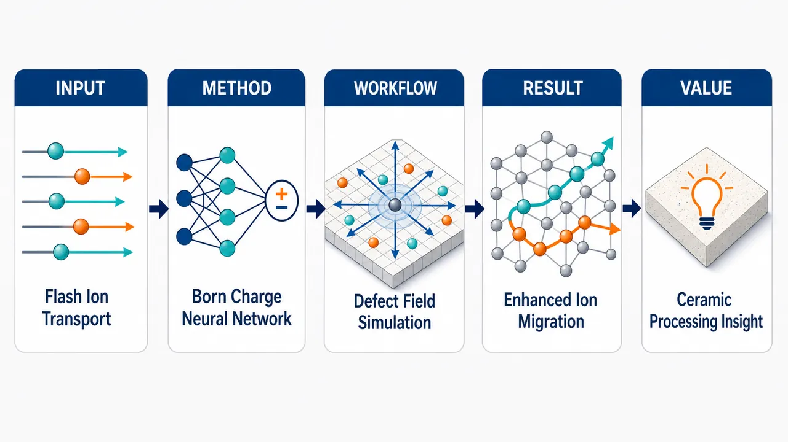
研究问题四方 ZrO₂ 陶瓷在 flash 事件中出现远超普通热扩散的快速传质现象，核心问题是：在非焦耳热机制下，电场如何驱动含缺陷 ZrO₂ 中的离子迁移，缺陷与局域电荷响应怎样共同影响离子运动路径与迁移速率。创新方法构建可同时预测原子能量、受力与 Born 有效电荷的神经网络势函数，把量子力学级别的动态电荷响应嵌入大尺度分子动力学；Aha 点在于不再使用固定离子电荷，而是让每个原子在缺陷环境和电场中呈现可变有效电荷，从而更真实地模拟电场诱导迁移。工作流程输入含氧空位等缺陷的四方 ZrO₂ 原子结构与外加电场；神经网络根据局域原子环境预测势能、原子力和 Born 有效电荷；将预测电荷耦合到电场力中开展分子动力学模拟；追踪 Zr 与 O 离子的位移、跳跃事件、扩散系数和迁移路径；输出电场下缺陷辅助离子迁移图景。关键结果研究揭示缺陷 ZrO₂ 在电场中可发生显著增强的离子迁移，快速传质并非只能由焦耳热升温解释；动态 Born 有效电荷使电场作用更精确，能够捕捉缺陷附近离子的局域极化、电荷重排和定向迁移趋势，为 flash 事件中的异常扩散提供微观机制证据。应用价值该研究为理解 ZrO₂ 陶瓷 flash 烧结、抗老化、氧离子导体和电场辅助陶瓷加工提供原子尺度依据；其神经网络加 Born 有效电荷框架也可推广到其他强电场、缺陷丰富、离子快速迁移的氧化物材料设计与性能预测。## 核心概览 本文属于计算材料学/离子输运模拟方向，研究含缺陷四方 ZrO₂ 在电场下的离子迁移，使用可同时预测 Born 有效电荷的神经网络势/模型，以解释 flash 事件中非焦耳热导致的快速传质现象。 ## 方法要点 - 以含缺陷的四方 ZrO₂ 为研究对象，关注电场作用下的离子迁移行为。 - 使用神经网络模型描述体系，并引入/同时预测 Born 有效电荷。 - 通过 Born 有效电荷将外加电场对离子的作用纳入模拟框架。 - 目标是理解 ZrO₂ 陶瓷 flash 事件中快速传质的非焦耳热机制；具体训练数据、网络结构和模拟细节摘要未详述。 ## 关键结果 - 摘要表明该工作实现了在电场下对缺陷 ZrO₂ 离子迁移的神经网络研究。 - 摘要指出模型能够同时预测 Born 有效电荷。 - 研究意图是为四方 ZrO₂ 陶瓷 flash 事件中的快速传质提供非焦耳热解释。 - 具体迁移率、扩散系数、能垒变化、缺陷类型或定量结论摘要未详述。 ## 创新性判断 - 可能的新颖点在于：将神经网络势/机器学习模型与 Born 有效电荷预测结合，用于描述外电场下缺陷 ZrO₂ 的离子迁移。 - 相比传统经验势或静态第一性原理计算，该方法可能更适合处理电场驱动下的大尺度或长时间离子输运过程；但摘要未详述模拟尺度和性能提升。 - 另一个潜在创新是将该方法用于解释 ZrO₂ flash 事件中的非焦耳热快速传质机制；不过具体机制链条和证据强度摘要未详述。 -
19
可微粒子网格 Ewald 学习长程静电📊 含图深析Differentiable Particle-Mesh Ewald with Cartesian Tensor Message Passing for Learning Long-Range Electrostatics and Dipole Response
💡 亮点：可微 Ewald 让机器学习势显式处理长程极化。
📖 展开分析 + 配图
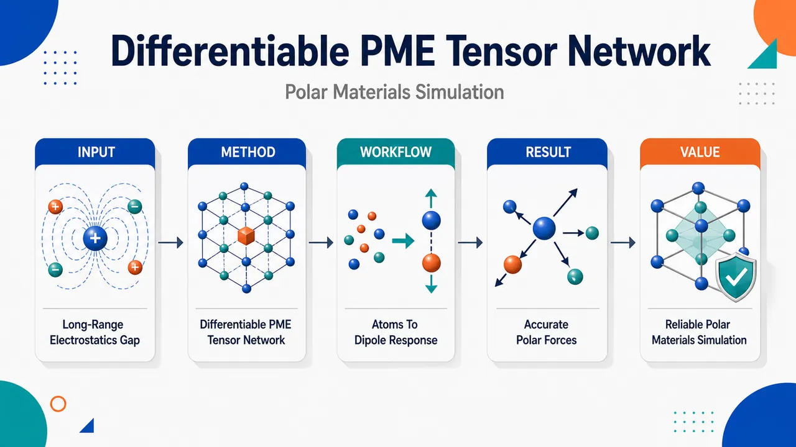
研究问题局域机器学习势通常只看有限邻域，难以准确表达离子、极性与可极化体系中的长程库仑相互作用和外场诱导偶极响应，导致电荷分布、能量与介电性质预测失真。创新方法将可微粒子网格 Ewald（PME）嵌入神经网络势能框架，用笛卡尔张量消息传递学习局域多极/偶极特征，再通过可微 Ewald 网格传播全局长程静电；Aha 点是把物理上精确的周期长程求和变成端到端可训练模块。工作流程输入原子坐标、元素类型与周期晶胞；局域图网络进行笛卡尔张量消息传递，生成与旋转协变的电荷/偶极等电性特征；PME 将粒子电性映射到网格，在倒空间计算长程静电势与场；再回传到原子上，联合短程项输出总能量、力、偶极矩和场响应。关键结果模型在含离子、极性和极化效应的体系中比纯局域机器学习势更稳定地捕捉长程静电，提升能量、力与偶极响应预测精度，并能保持周期体系中 Ewald 静电处理的物理一致性与可微训练能力。应用价值可用于模拟电解质、界面、极性分子、离子晶体和介电材料等长程静电主导体系，为分子动力学、材料筛选、极化响应和外场作用下性质预测提供更可靠的机器学习势。## 核心概览 该论文属于机器学习分子模拟/势能模型方向，提出结合可微粒子网格 Ewald 与笛卡尔张量消息传递，以学习长程静电和偶极响应。 ## 方法要点 - 使用可微分的粒子网格 Ewald（Particle-Mesh Ewald, PME）处理长程静电相互作用。 - 引入笛卡尔张量消息传递，用于表征与传播具有方向性/张量性质的物理量。 - 目标是构建可学习的长程静电与偶极响应模型。 - 方法面向离子、极性和极化体系中局域机器学习势难以充分建模的问题。 - 具体网络结构、损失函数、训练数据与实现细节摘要未详述。 ## 关键结果 - 摘要明确指出，该方法旨在弥补局域机器学习势在离子、极性和极化体系中的不足。 - 摘要表明模型能够学习长程静电和偶极响应。 - 是否在精度、泛化性、计算效率或实际分子动力学表现上优于基线，摘要未详述。 - 具体实验体系、评价指标和定量结果摘要未详述。 ## 创新性判断 - 可能的新颖点在于将可微 PME 与机器学习势结合，使长程静电处理可端到端学习；但摘要未说明是否已有类似实现。 - 另一可能创新是用笛卡尔张量消息传递刻画偶极响应等方向相关性质，增强对极性/极化体系的建模能力。 - 相比纯局域机器学习势，该工作可能更强调显式长程物理与可学习局域/张量表征的耦合。 - 创新性强弱、与现有长程 ML 势或等变神经网络方法的具体差异，摘要未详述，需全文确认。 -
20
果胶水解提取参数多任务预测的机器学习比较📊 含图深析A Comparative Analysis of Machine Learning Algorithms for Multi-Task Prediction of the Parameters of the Pectin Hydrolysis--Extraction Process
💡 亮点：千组实验支撑果胶提取工艺的多任务预测比较。
📖 展开分析 + 配图
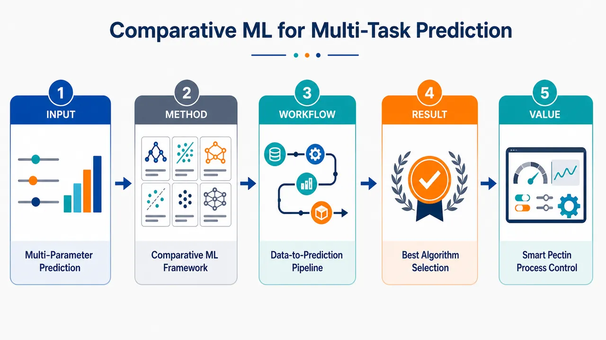
研究问题如何利用 1000 组实验数据，同时预测果胶水解—提取过程中的多个关键工艺参数，解决传统单参数建模难以描述复杂联动工艺的问题。创新方法将多种机器学习算法放在同一多任务预测框架下进行对比，突出“一个模型/一套方法同时预测多个水解—提取参数”的能力，用算法性能比较寻找最适合果胶工艺控制的智能预测方案。工作流程输入 1000 组果胶水解—提取实验数据；提取工艺变量与目标参数；分别训练多种机器学习模型；进行多任务参数预测；比较不同算法的预测精度与稳定性；输出最优模型及多参数预测结果。关键结果实验表明，机器学习可用于果胶水解—提取过程的多参数联合预测；不同算法在预测精度和泛化能力上存在明显差异，可筛选出更适合复杂工艺过程控制的模型。应用价值为果胶提取工业提供数据驱动的工艺参数预测工具，可辅助优化水解—提取条件、减少实验试错、提高过程控制效率，并推动食品与生物质加工过程的智能化。## 核心概览 该论文属于食品/生物质加工过程建模与机器学习应用方向，基于 1000 组实验数据，比较多种机器学习算法对果胶水解—提取工艺参数的多任务预测能力，服务于复杂工艺过程控制。 ## 方法要点 - 使用 1000 组果胶水解—提取过程实验数据作为建模基础。 - 将工艺参数预测表述为“多任务预测”问题，而非单一输出预测。 - 比较多种机器学习算法在该多任务预测任务中的表现。 - 研究目标指向复杂工艺过程的预测建模与过程控制支持。 - 摘要未详述具体采用了哪些机器学习算法、输入变量、输出参数或数据划分方式。 ## 关键结果 - 摘要明确说明论文完成了多种机器学习算法的比较分析。 - 摘要明确说明研究对象是果胶水解—提取过程的多参数工艺预测。 - 摘要表明该方法面向复杂工艺过程控制具有应用目的。 - 摘要未详述最佳算法、预测精度、评价指标、统计显著性或具体性能差异。 ## 创新性判断 - 可能的新颖点在于将多任务机器学习预测用于果胶水解—提取这一具体工艺过程，并基于较大规模的 1000 组实验数据进行算法比较。 - 相比单参数或单模型预测研究，其潜在创新性可能体现在“多参数联合预测”和“多算法系统比较”上。 - 但由于摘要未说明已有工作的基线、具体算法、性能提升或应用验证，创新性强弱无法确定，只能认为其新颖性可能偏应用集成与比较分析。 -
21
机器学习分子动力学揭示 SiC 熔化Microscopic origin of polytype-dependent melting in SiC revealed by machine-learning molecular dynamics
💡 亮点：机器学习动力学解析 SiC 多型熔化差异。
-
22
非晶量子自旋霍尔绝缘体相图Phase diagram of amorphous quantum spin Hall insulators
💡 亮点：BHZ 模型给出非晶量子自旋霍尔相图。
-
23
CeNiAsO中4f电子抑制p波交替磁性Suppression of p-Wave Altermagnetism by Localized 4f Electrons in CeNiAsO
💡 亮点：CeNiAsO 的局域 4f 电子削弱 p 波交替磁性。
-
24
单对齐石墨烯-hBN莫尔超晶格铁电滞回Ferroelectric hysteresis in singly aligned graphene-hBN moiré superlattices
💡 亮点：石墨烯-hBN 莫尔超晶格呈现铁电滞回。
-
25
滑移扭转双层中的莫尔应变斯格明子Moiré Strain Skyrmions in Sliding Twisted Bilayers
💡 亮点：滑移扭转双层可生成机械莫尔应变斯格明子。
-
26
Cu-Mn比例影响Cu1-xMn1+ySiTe3结构缺陷Impact of Cu-Mn ratio on Structure and Defects in Layered Multiferroic Cu1-xMn1+ySiTe3
💡 亮点：Cu-Mn 非化学计量改变层状多铁体缺陷结构。
-
27
无序与多畴动力学影响3R-WSe2滑移铁电性Impact of Disorder Dynamics and Multi-Domain Kinetics on the Sliding Ferroelectricity of CVD-Grown 3R-WSe2 Bilayers
💡 亮点：CVD 3R-WSe2 的铁电翻转受无序和多畴控制。
-
28
电子霍尔黏度：反铁磁体隐秘指标Electronic Hall viscosity: hidden indicator for antiferromagnets
💡 亮点：电子霍尔黏度可探测反铁磁体隐藏 Berry 曲率。
-
29
EuSn2As2中磁驱电子态重构成像Imaging the Magnetically Driven Reconstruction of the Electronic States in the Antiferromagnetic Topological Insulator EuSn₂As₂
💡 亮点：STM 直接观察 EuSn2As2 的磁驱表面电子重构。
-
30
MnF2中的交替磁性及能带劈裂后果Altermagnetism in MnF₂: Band Splitting and Its Physical Consequences
💡 亮点：最小模型量化 MnF2 交替磁性能带劈裂。
-
31
YIG纳米结构中自旋波相位参量放大Phase-dependent parametric amplification of propagating spin waves in YIG nanostructures enabled by local inhomogeneities
💡 亮点：局域不均匀性使 YIG 自旋波可相位敏感放大。
-
32
光学非厄米趋肤模中的横向自旋纹理Transverse spin texture in optical non-Hermitian skin modes
💡 亮点：非厄米光学趋肤模可承载横向自旋纹理。
-
33
噪声量子电路张量网络模拟复杂性Complexity of tensor network simulation for noisy quantum circuits
💡 亮点：算符纠缠熵给出噪声电路可模拟性界限。
-
34
扭转XY磁体中的非共线纹理与90°畴壁Noncollinear spin textures and 90deg domain walls in twisted XY magnets
💡 亮点：XY 莫尔磁体中出现非共线纹理和90°畴壁。
-
35
拓扑FeSe双层中堆垛调控交替磁性Stacking-Engineered Switchable Altermagnetism in Topological FeSe bilayer systems
💡 亮点：FeSe 双层堆垛可开关交替磁性。
-
36
量子化轨道与自旋霍尔输运Quantized orbital and spin Hall transport: interplay between sp-hybridization, altermagnetism and spin-orbit coupling
💡 亮点：sp 杂化与交替磁性可共同塑造霍尔输运。
-
37
鞅方法求自旋网络普适标度极限Universal scaling limits for spin networks via martingale methods
💡 亮点：鞅大偏差推出全连接自旋普适极限。
-
38
铁磁AT6X6笼目化合物的计算预测Computational prediction of ferromagnetic AT₆X₆ kagome compounds
💡 亮点：高通量 DFT 筛选 312 种铁磁 AT6X6 笼目候选物。
-
39
铜氧化物/锰氧化物界面增强磁各向异性Interface-driven enhancement of magnetic anisotropy in infinite-layer cuprate/manganite heterostructures
💡 亮点：氧化物界面轨道重排增强磁各向异性。
-
40
FeF2中磁振子的交替磁性与偶极劈裂Altermagnetic and Dipolar Splitting of Magnons in FeF₂
💡 亮点：FeF2 磁振子劈裂主要由长程偶极作用主导。
-
41
耦合有源环路的磁子组合存储Magnonic Combinatorial Memory based on a network of coupled active ring circuits
💡 亮点：用信号路径而非局域态编码存储位。
-
42
重费米子铁磁体中的巨反常霍尔与能斯特效应Giant anomalous Hall and Nernst effects in a heavy fermion ferromagnet
💡 亮点：重费米子铁磁体显示巨反常霍尔和能斯特响应。
-
43
刚性多物理场 PDE 的神经谱元法Neural Spectral Element Methods for stiff multiphysics PDEs with electrochemical transport benchmarks
💡 亮点：固定谱元节点降低神经 PDE 导数开销。
-
44
堆叠双层材料性质的多模态学习Property Prediction of Stacked Bilayer Materials: A Multimodal Learning Approach
💡 亮点：多模态模型预测堆叠双层二维材料性质。
-
45
界面互锁水凝胶电解质全聚合物纤维电池Energetic All‐Polymer Fiber Batteries Enabled by Interface‐Interlocked Water‐In‐Network Electrolytes for Wearable Electronics
💡 亮点：界面互锁水系网络电解质用于纤维电池。
-
46
水凝胶驱动的下一代脑机接口From Bio‐Interface Materials to Neural Integration: The Next‐Generation Brain–Machine Interfaces Powered by Hydrogels
💡 亮点：水凝胶改善脑机接口的软湿神经耦合。
- 47
-
48
建筑能量管理的可解释深度强化学习Explainable Data-driven Deep Reinforcement Learning Methods for Optimal Energy Management in Buildings
💡 亮点：可解释强化学习调度光伏储能建筑能量。
-
49
纳米材料增强全氟己酮配网灭火Perfluorohexanone Fire Extinguishing Agent System Enhanced by Nanomaterials and Its Application in Fire Protection of Distribution Networks
💡 亮点：纳米增强全氟己酮用于配网电气灭火。
-
50
复杂网络影响节点排序的轻量深度模型A Lightweight Deep Learning-based Model for Ranking Influential Nodes in Complex Networks
💡 亮点：轻量深度模型用于高效识别复杂网络关键节点。
-
51
约束偏微分方程的胞腔层神经算子Cellular Sheaf Neural Operators for Structure-Preserving Surrogate Modeling of Constrained PDEs
💡 亮点：胞腔层神经算子保持约束偏微分方程结构。
-
52
EvoBrain 异构脑机任务持续学习EvoBrain: Continual Learning of EEG Foundation Models Across Heterogeneous BCI Tasks
💡 亮点：EEG 基础模型通过持续学习跨任务迁移。
-
53
深度学习作为温和对象的规训构造Deep Learning as the Disciplined Construction of Tame Objects
💡 亮点：用温和几何刻画深度网络函数族。
-
54
深度学习绘制巴西小水库演化Mapping the evolution of small reservoirs in Brazil from 1984 to 2025 using deep learning
💡 亮点：深度学习重建巴西小水库 41 年变化。
-
55
缠结聚合物网络的物理原始路径分析Physically-Motivated Primitive Path Analysis of Entangled Polymer Networks
💡 亮点：以原始路径量化聚合物缠结力学贡献。
-
56
反椭圆问题的交替学习配置法An alternating learning-based collocation method for solving inverse elliptic problems
💡 亮点：正弦浅层网络自适应生成反问题基函数。
-
57
力依赖随机切断驱动纤维网络应力松弛Stress relaxation in fiber networks via force-dependent stochastic severing
💡 亮点：受力越强的纤维切断控制网络松弛。
- 58
-
59
深度网络由局部统计解析等深文法Deep networks learn to parse uniform-depth context-free languages from local statistics
💡 亮点：局部统计足以驱动网络学习等深文法。
-
60
裂隙介质惯性层流的网络尺度后果Modeling Inertial Laminar Flow in Fractured Media: Network-Scale Consequences
💡 亮点：中等雷诺数惯性使裂隙流偏离达西律。